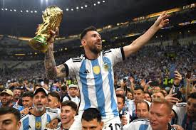
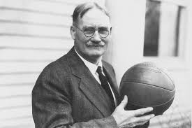
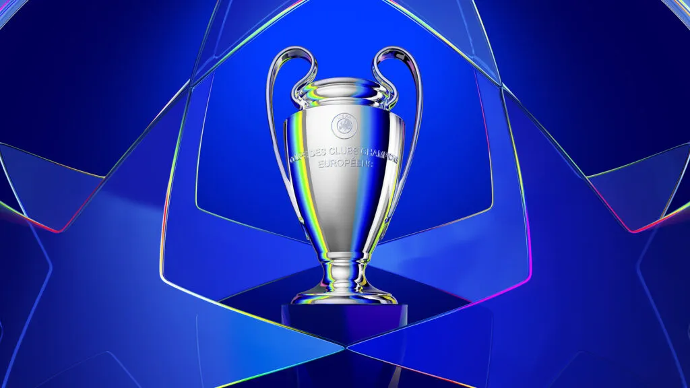

La pasión del fútbol
Descubre lo mejor del deporte rey, con estilo y elegancia.
Último Campeón del Mundo
Argentina se consagró campeona del Mundial de la FIFA Qatar 2022, tras una emocionante final contra Francia. Fue su tercera estrella, liderados por Lionel Messi El 18 de diciembre de 2022 es una fecha que ya quedó para la historia de la Selección Argentina: el equipo dirigido por Lionel Scaloni y capitaneado por Lionel Messi se consagró campeón del mundo en Qatar.Tras el vertiginoso empate 3-3, que tuvo suspenso hasta el pitazo final con la heroica atajada de Dibu Martínez a Randal Kolo Muani, Argentina ganó 4-2 en la definición por penales en el estadio de Lusail, en uno de los partidos más maravillosos de todos los tiempos.
Fundador del Fútbol Moderno
El fútbol moderno fue reglamentado por primera vez en Inglaterra en 1863. Ebenezer Cobb Morley es reconocido como uno de los padres fundadores de este deporte, tras ayudar a crear las primeras reglas de juego y formar la Football Association. Su contribución fue clave para transformar el fútbol en un deporte organizado y accesible para todos. Antes de su intervención, el fútbol carecía de reglas claras, lo que generaba confusión y conflictos durante los partidos. Gracias a su visión y liderazgo, el fútbol comenzó a evolucionar hacia el deporte global que conocemos hoy, uniendo a millones de personas en todo el mundo.
Champions League
La UEFA Champions League es el torneo de clubes más prestigioso del mundo. Fundado en 1955, reúne a los mejores equipos de Europa en una emocionante competencia anual. Este torneo ha sido testigo de momentos históricos, goles inolvidables y actuaciones legendarias de jugadores que han dejado su huella en el fútbol. Equipos como el Real Madrid, Barcelona, Bayern Múnich y Manchester United han escrito capítulos gloriosos en esta competición, convirtiéndola en un espectáculo imperdible para los aficionados al deporte rey.
